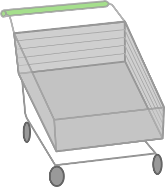
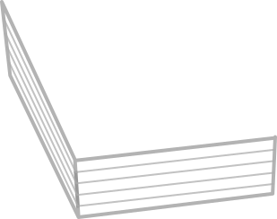
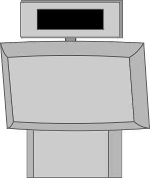
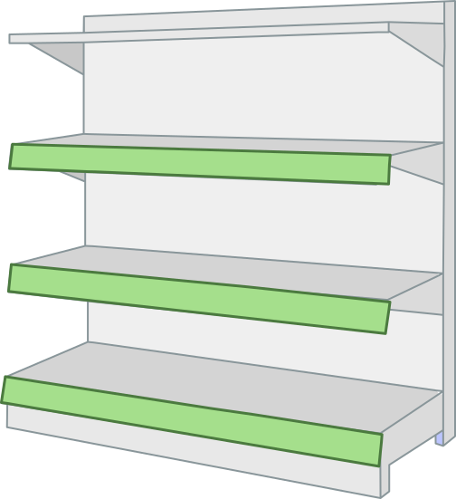
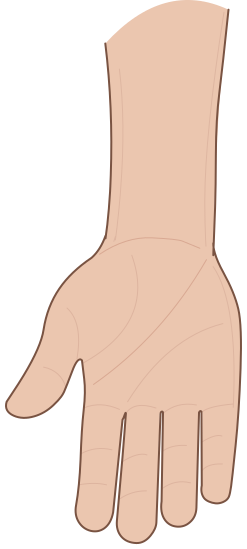
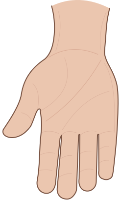
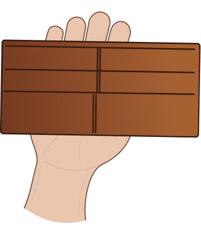

Doorway
Supermarket



£3.79Supermarket

Trolley
Pay



Doorway Supermarket Receipt
| Item | Price | Rounded |
|---|---|---|
| Total: | ||
| Cash: | ||
| Change: |
Tip: choose 'Save as PDF' in the print dialog to keep a digital copy.